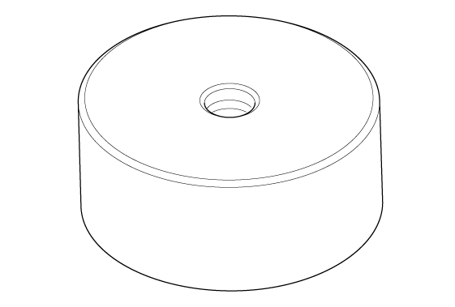

LEMON Manuals
: Even more car manuals for everyone: 1960-2025
Home
>>
Honda
>>
2016
>>
Civic LX, 4D Sedan, Automatic CVT Trans
>>
Repair and Diagnosis (Single Page)
>>
Engine Mechanical
>>
Lubrication System
>>
Lubrication System - Testing & Troubleshooting
>>
Replacement
>>
Transmission End Crankshaft Oil Seal Replacement - In Car (K20C2/K20C1)
>>
Notes
Transmission End Crankshaft Oil Seal Replacement - In Car (K20C2/K20C1): Notes
Special Tools Required
Image
Description/Tool Number
Courtesy of HONDA, U.S.A., INC.
Driver Handle, 15 x 135L 07749-0010000

Courtesy of HONDA, U.S.A., INC.
Oil Seal Driver Attachment, 96 mm 07ZAD-PNAA100